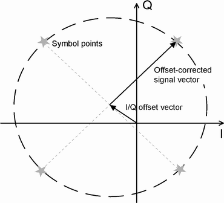
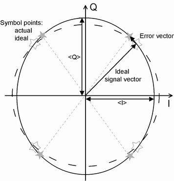
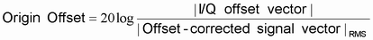
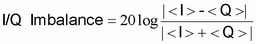
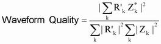

The following figure is an idealized representation of the modulation errors. The effects of a pure origin offset (first diagram) and of a pure I/Q imbalance (second diagram) are disentangled.


The I/Q offset in dB is the logarithmic ratio of the I/Q offset vector (i.e. the estimated DC-offset of the measured signal) to the average offset-corrected signal vector:

In the equation above, | Offset - corrected signal vector |RMS denotes the magnitude of the offset-corrected signal vector that is RMS-averaged over all samples.
The I/Q imbalance in dB is equal to the difference between the estimated I and Q amplitudes of the measured signal, which are normalized and logarithmized as follows:

The waveform quality or rho factor is a measure for the modulation accuracy. It corresponds to the normalized correlated power between the actual waveform and the ideal waveform sampled at the constellation points. It is defined as:

Where R’k is the kth sample of the ideal signal, Zk is the kth sample of the measured signal (both in complex representation) and the sums run over all samples. For an ideal transmitter (Zk = Rk for all k), the waveform quality is equal to 1. For real transmitters, the waveform quality is a positive real number smaller than 1.
- In the analysis "With Origin Offset", the modulation vectors R and Z for the EVM calculation are measured from the origin of the I/Q plane. So the results for the EVM, phase error and magnitude error include a possible origin offset.
- In the analysis "Without Origin Offset", the modulation vectors R and Z for the EVM calculation are measured from the coordinates of the I/Q offset vector. So the origin offset is subtracted out in the EVM, phase error and magnitude error results.